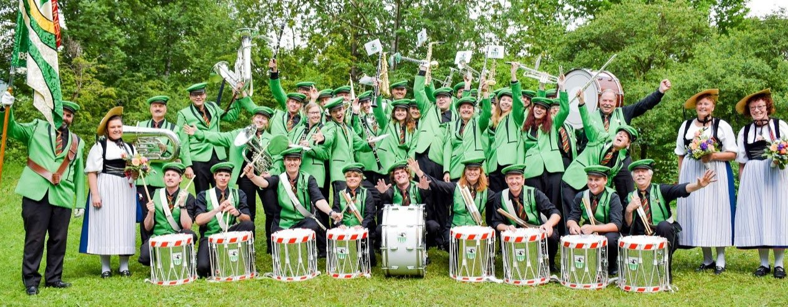

Über uns
Jugendmusik Lauterbrunnental

Die Jugenmusik Lauterbrunnental ist eine Gruppe von Jungbläsern aus dem ganzen Lauterbrunnental. Derzeit steht die Jugendmusik
unter der Leitung von Ulrike Graf.
Natürlich werden die Jungbläser auch von den Regionalen Musikgesellschaften unterstützt. Nachfolgend werden diese genannt:
Musikgesellschaft Lauterbrunnen

Die Musikgesellschaft Lauterbrunnen, unter der Präsidentschaft von Kurt Schweizer und Leitung von Richard Blatter, ist ein Verein,
welche bereits seit über 125 Jahren mit Freude musiziert.
Tambouren

Die Tambourengruppe aus Lauterbrunnen, eine muntere Truppe mit zehn Mitgliedern, ist der Musikgesellschaft Lauterbrunnen angesiedelt
und zeichnet sich durch die Vielseitigkeit in ihrem Repertoire aus. Ob Schwyzerörgeli, riesige Trommeln oder klassische Tamburins, alles wird
integriert und dargeboten.
Musikgesellschaft Wengen

Auch die Musikgesellschaft Wengen hat eine lange Vereinsgeschichte. Die ersten Aufzeichnungen dieses Vereins stammen vom Jahre 1897.
Mürren Musig

Die Mürren Musig ist eine Gruppe von überzeugten Bläsern aus Mürren. Genau so wie die anderen Musikgesellschaften aus dem Lauterbrunnental
fungieren sie als Dorfmusik und unterhalten die Bewohner aus ihrem Dorf.